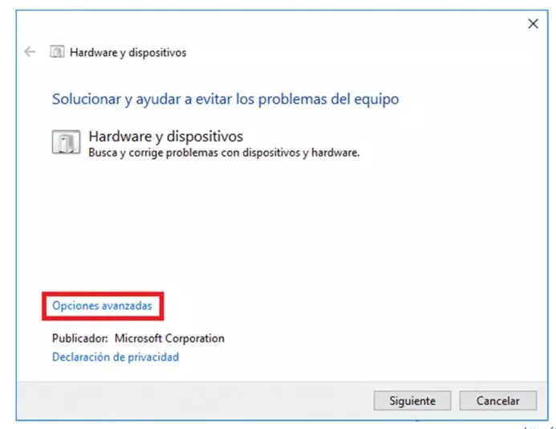
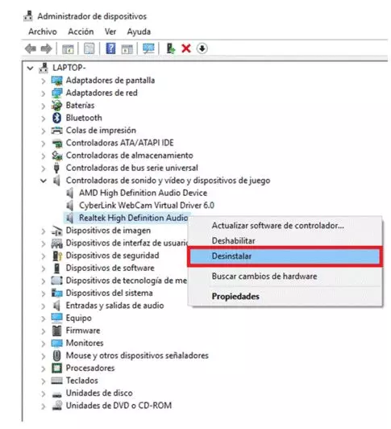
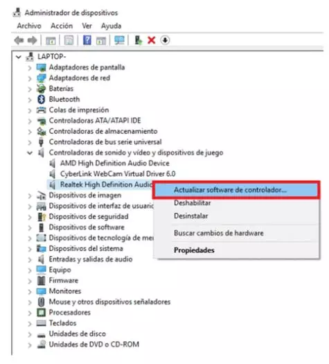

Actualizar drivers
Los controladores de software, conocidos también como drivers, son los que permiten que el ordenador se pueda ‘comunicar’ con los dispositivos de hardware. Se trata de un componente crucial para que periféricos, accesorios y componentes de hardware puedan funcionar de forma correcta.
Solcionador de problemas de hardware
Podemos recurrir a una herramienta automática del sistema, que es el solucionador de problemas de hardware. Esta vez tendremos que ir a la barra de tareas y, en el cuadro de búsqueda al lado de Inicio, escribiremos ‘Buscar y corregir problemas’ para seleccionar el primer resultado, que debería ser ‘Buscar y corregir problemas con dispositivos’.
Usaremos las Opciones avanzadas y, dentro de la herramienta, seleccionaremos la opción de Aplicar reparaciones automáticas para que, en caso de detectar problemas con los drivers o controladores, Windows 10 pueda aplicar por sí solo los cambios que sean necesarios.
Administrador de dispositivos
Si lo anterior no funcionó, hay varias opciones adicionales y algunas de ellas son directamente desde el Administrador de dispositivos. Podemos encontrarlo buscándolo en la barra de tareas, como antes. Y una vez abierto, el primer paso e intento será buscar el dispositivo que esté teniendo problemas con los drivers, hacer clic derecho sobre el mismo y seleccionar la opción ‘Actualizar software de controlador’. Ahora, solo nos quedará pulsar la opción ‘Buscar automáticamente software de controlador actualizado’ con la intención de que el sistema de actualizaciones automáticas solucione el problema.
Dentro del mismo Administrador de dispositivos tenemos otra opción, que es instalar el driver genérico de Windows 10 para un dispositivo, en caso de que exista. Aquí, el primer paso será buscar el dispositivo conflictivo, hacer clic derecho y pulsar Desinstalar eligiendo también la opción ‘Eliminar el software de controlador de este dispositivo’ y, ahora sí, pulsando Aceptar. Cuando acabe el proceso se recomienda reiniciar el equipo.
Si esto sigue sin funcionar, entonces es cuando usaremos el driver genérico para el dispositivo. Lo haremos dentro del Administrador de dispositivos una vez más, haciendo clic derecho en el dispositivo conflictivo y pulsando ‘Actualizar software de controlador’ para, a continuación, escoger la opción ‘Buscar software de controlador en el equipo’. Esto nos serviría para instalar un driver de forma manual, pero en esta ocasión procederemos escogiendo la opción ‘Elegir en una lista de controladores de dispositivo en el equipo’. Y entonces, activaremos la casilla ‘Mostrar el hardware compatible’ y, del listado, seleccionaremos un controlador adecuado para que se instale de la forma habitual.
Drivers ocultos
Es posible que algunos controladores no estén visibles en el Administrador de dispositivos, generalmente aquellos que son configurados por parte del fabricante de nuestro ordenador y que requieren de una instalación manual. Para mostrarlos, tenemos que abrir el Administrador de dispositivos y a continuación, pulsamos sobre la opción de menú Ver y hacemos clic en Mostrar dispositivos ocultos.
Esto hará que se muestren estos dispositivos cuyos drivers pueden estar causando problemas en Windows 10 y que, por lo tanto, ya podremos actualizar. En esta ocasión, lo normal es que requieran de una instalación manual, por lo que probablemente tendremos que ir a la web del fabricante, descargar el controlador más actualizado e instalarlo en nuestro equipo.